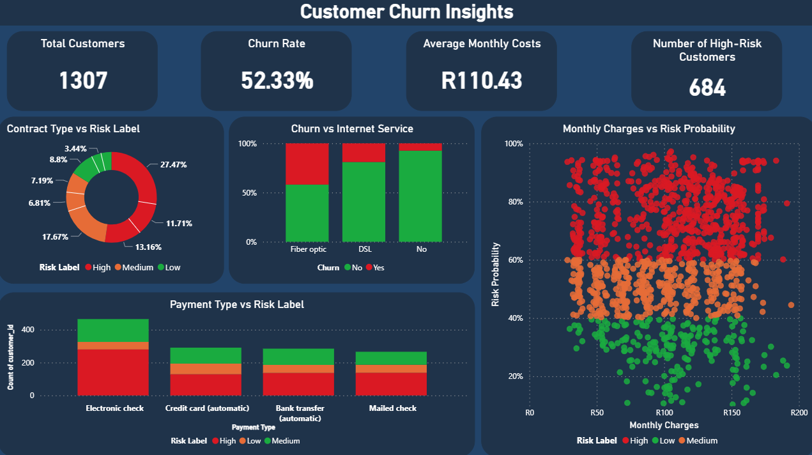

Telco Customer Churn Prediction & Insights
Using Data Science & Explainable AI to Identify High-Risk Customers and Boost Retention
Concept / Problem
Telecom companies lose millions annually due to customer churn. Predicting which customers are likely to leave helps companies proactively retain them.
In this project, I developed a predictive model to identify high-risk customers and provide actionable insights to reduce churn while protecting recurring revenue.
Approach
- EDA: Understand patterns in churn, tenure, and service usage.
- Feature Engineering: Derived features like tenure groups, total services, and high charges flags.
- Modeling: Logistic Regression, Random Forest, XGBoost. Selected the best-performing model.
- Explainability: SHAP values to identify key churn drivers.
- Business Insights: Calculated expected saved revenue and suggested targeted retention strategies.

Data
7,043 telecom customers with features like gender, seniority, service usage, contract type, payment method, and monthly charges.
tenure,MonthlyCharges,TotalCharges- Contract & Payment Type
- Service usage flags (Online Security, Streaming, Tech Support)
- Target variable:
Churn

Key Insights & Visuals
- Churn Drivers: Fiber-optic internet, month-to-month contracts, electronic check payments.
- Demographics: Senior citizens and customers without partners or dependents have higher churn rates.
- Revenue Opportunity: Targeting high-risk customers can save ~$145,000 annually.


Code & Dashboard
- Notebook snippets: EDA, Feature Engineering, Model Training
- Power BI dashboard: Key Influencers, customer segmentation, churn probabilities
- SHAP feature importance visuals
View Feature Engineering Code
df['tenure_group'] = pd.cut(df['tenure'], bins=[0, 12, 24, 36, 48, 60, 72],
labels=['0-12','13-24','25-36','37-48','49-60','61+'])Impact / Results
- Accuracy: 80%
- Precision: 65%
- Recall: 52%
- ROC-AUC: 0.84
- Identified 684 high-risk customers
- Expected saved revenue: $145,095